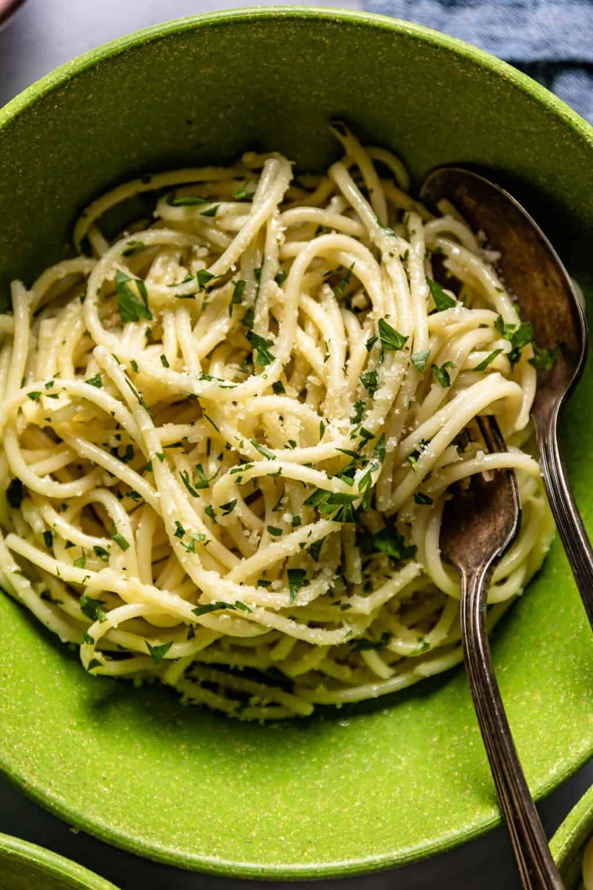

Garlic Butter Spaghettis

Description
Deliciously simple, this Garlic Butter Spaghetti with Parmesan is a weeknight hero. Dive into creamy, garlicky goodness in under 20 minutes.
Ingredients
- 8 oz spaghetti
- 4 tbsp unsalted butter
- 4 garlic cloves, minced
- a splash of olive oil
- 1/2 cup grated Parmesan, plus extra for serving
- a couple of fresh basil leaves, chopped
- salt and freshly ground black pepper
Steps
- Bring a large pot of salted water to a boil. Add the spaghetti and cook according to package instructions until al dente, about 8-10 minutes. Tip: Reserve a cup of pasta water before draining.
- While the pasta cooks, melt the butter with a splash of olive oil in a large skillet over medium heat. Tip: The olive oil prevents the butter from burning.
- Add the minced garlic to the skillet and sauté until fragrant, about 1 minute. Be careful not to let it brown.
- Drain the spaghetti and add it directly to the skillet with the garlic butter. Toss to coat evenly.
- Now the most interesting part begins, as we start to shape our dough into galnash. Take one little dough piece and place your thumb on top of it. Then, press it with your thumb, roll the dough on a flat surface shaping it into a sort of seashell.
- Stir in the grated Parmesan and a splash of the reserved pasta water to create a silky sauce. Tip: The starch in the pasta water helps the sauce cling to the noodles.
- Season with salt and freshly ground black pepper to taste. Toss in the chopped basil for a fresh finish.
- Serve immediately with extra Parmesan on top.
- Enjoy!